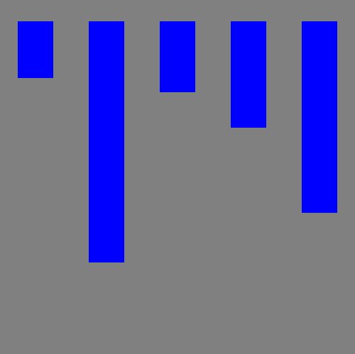
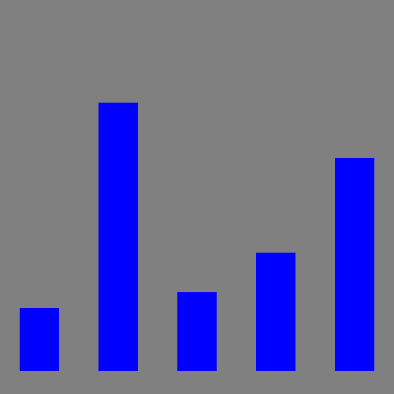
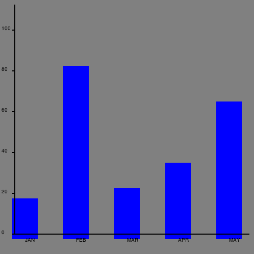
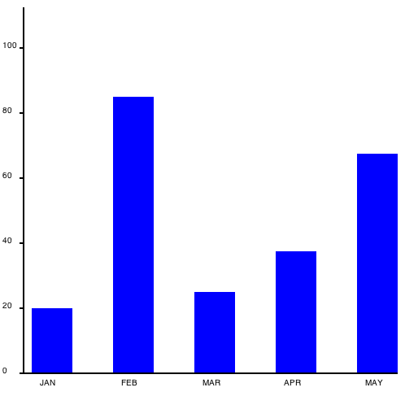
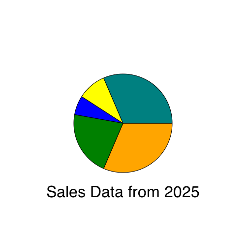
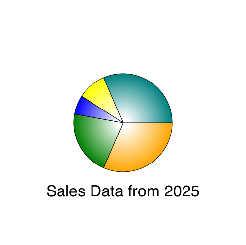

Практика: создание диаграмм
Исходники всех проектов из этой книге можно найти здесь.
Обратите внимание, что в этой главе мы будем загружать код напрямую с локального жёсткого диска, а не через веб-сервер. Вам, возможно, потребуется отключить безопасность в Chrome на время разработки. Если в Chrome у вас возникли проблемы с загрузкой изображений или других файлов непосредственно с диска, попробуйте добавить некоторые флаги безопасности в командной строке.
На Mac OS X это будет так:
/Applications/Google\ Chrome.app/Contents/MacOS/Google\ Chrome --allow-file-access-from-files --disable-web-security
На Linux:
chromium-browser --disable-web-security
В Windows:
chrome.exe --disable-web-security
Кроме того, вы можете загрузить страницы через локальный веб-сервер.
В этой главе мы отобразим некоторые данные путём рисования гистограммы. Это покажет вам основы рисования линий, фигур и текста, затем мы сделаем круговую диаграмму с градиентом.
Создание новой страницы
Начните с создания нового текстового файла с именем barchart.html и наберите в нём:
<html>
<body>
<canvas width="500" height="500" id="canvas"></canvas>
<script>
var data = [ 16, 68, 20, 30, 54 ];
</script>
</body>
</html>Страница выше содержит элементы <canvas> и <script>. Элемент <canvas> представляет собой прямоугольник на экране, в котором будет происходить рисование. width и height определяют, насколько он будет большой. <canvas> это блочный элемент похожий на <div>, так что вы можете стилизовать его или позиционировать так же, как и всё остальное на странице.
Переменная data в скрипте хранит набор точек данных, которые мы отобразим в гистограмме.
Теперь получим указатель на холст и зальём фон серым цветом. Добавьте это в скрипт после переменной data.
// получаем указатель на холст
var canvas = document.getElementById('canvas');
// получаем указатель на контекст рисования
var c = canvas.getContext('2d');
// рисуем
c.fillStyle = "gray";
c.fillRect(0,0,500,500);Добавляем данные
Теперь вы можете нарисовать некоторые данные. Сделайте это пробегаясь в цикле по массиву data. Для каждой точки данных заливаем прямоугольник, координата х которого определяется индексом массива, а высота — его значением.
// рисуем данные
c.fillStyle = "blue";
for(var i=0; i<data.length; i++) {
var dp = data[i];
c.fillRect(25 + i*100, 30, 50, dp*5);
}Теперь загрузите эту страницу в вашем браузере. Должно выглядеть примерно так:

Простая гистограмма
Первая проблема состоит в том, что столбцы идут сверху вниз вместо снизу вверх. Помните, что ось у содержит 0 вверху и увеличивается когда вы идёте вниз. Чтобы столбцы шли снизу вверх изменим значение y на рассчитанное как высота холста (500) минус высота столбца (dp*5), а затем дополнительно вычтем 30, чтобы подогнать по высоте.
// рисуем данные
c.fillStyle = "blue";
for(var i=0; i<data.length; i++) {
var dp = data[i];
c.fillRect(25 + i*100, 500-dp*5 - 30 , 50, dp*5);
}Теперь это выглядит так:

Фиксированная ориентация
Осевые линии и метки
Теперь добавим оси через обводку линии, которая начинается сверху, движется вниз и вправо.
// рисуем осевые линии
c.fillStyle = "black";
c.lineWidth = 2.0;
c.beginPath();
c.moveTo(30,10);
c.lineTo(30,460);
c.lineTo(490,460);
c.stroke();Теперь добавим значение метки и засечки слева.
// рисуем текст и вертикальные линии
c.fillStyle = "black";
for(var i=0; i<6; i++) {
c.fillText((5-i)*20 + "",4, i*80+60);
c.beginPath();
c.moveTo(25,i*80+60);
c.lineTo(30,i*80+60);
c.stroke();
}И, наконец, добавим метки снизу для первых пяти месяцев года.
var labels = ["JAN","FEB","MAR","APR","MAY"];
// выводим текст
for(var i=0; i<5; i++) {
c.fillText(labels[i], 50+ i*100, 475);
}Результат выглядит следующим образом:

Диаграмма с осевым линиям и метками
Не плохо, но есть несколько правок, которые нам надо внести. Давайте изменим цвет фона на белый, чтобы это было не так скучно, затем немного настроим положение столбцов, чтобы они на самом деле начинались с нуля.
// рисуем фон
c.fillStyle = "white";
c.fillRect(0,0,500,500);
// рисуем данные
c.fillStyle = "blue";
for(var i=0; i<data.length; i++) {
var dp = data[i];
c.fillRect(40 + i*100, 460-dp*5 , 50, dp*5);
}Теперь окончательно диаграмма выглядит следующим образом:

Красивая гистограмма
Круговая диаграмма
Теперь возьмём те же данные и нарисуем круговую диаграмму. Код очень похож.
Создайте новый документ под названием piechart.html со следующим содержимым:
<html>
<body>
<canvas width="500" height="500" id="canvas"></canvas>
<script>
// инициализация набора данных
var data = [ 100, 68, 20, 30, 100 ];
var canvas = document.getElementById('canvas');
var c = canvas.getContext('2d');
// рисуем фон
c.fillStyle = "white";
c.fillRect(0,0,500,500);
</script>
</body>
</html>Теперь добавьте список цветов (один для каждой точки данных) и вычислим суммарное значение всех данных.
// список цветов
var colors = [ "orange", "green", "blue", "yellow", "teal"];
// вычисляем сумму всех данных
var total = 0;
for(var i=0; i<data.length; i++) {
total += data[i];
}Рисование настоящих секторов кажется сложным, но на самом деле это довольно легко. Каждый сектор начинается в центре круга (250,250), затем рисуется дуга от предыдущего угла до нового угла. Угол представляет собой данные конвертированные в радианы. Предыдущая угол — это угол от предыдущей итерации цикла (начиная с 0). Дуга с центром в 250,250 имеет радиус 100. Затем проводим линию обратно в центр, заливаем и обводим фигуру.
// рисуем круговые данные
var prevAngle = 0;
for(var i=0; i<data.length; i++) {
// доля, представленная сегментом
var fraction = data[i]/total;
// вычисляем начальный угол
var angle = prevAngle + fraction*Math.PI*2;
// рисуем сегмент
c.fillStyle = colors[i];
// создаём контур
c.beginPath();
c.moveTo(250,250);
c.arc(250,250, 100, prevAngle, angle, false);
c.lineTo(250,250);
// заливаем его
c.fill();
// обводим его
c.strokeStyle = "black";
c.stroke();
// обновляем для следующей итерации цикла
prevAngle = angle;
}Окончательно добавим текст ниже графика. Для центрирования текста необходимо сначала рассчитать ширину текста:
// рисуем текст по центру
c.fillStyle = "black";
c.font = "24pt sans-serif";
var text = "Sales Data from 2025";
var metrics = c.measureText(text);
c.fillText(text, 250-metrics.width/2, 400); И вот как это выглядит:

Добавляем градиент
Чтобы диаграмма выглядела немного привлекательнее вы можете залить каждый сегмент радиальным градиентом, вроде этого:
// рисуем сегмент
//c.fillStyle = colors[i];
// заливаем радиальным градиентом
var grad = c.createRadialGradient( 250,250, 10, 250,250, 100);
grad.addColorStop(0,"white");
grad.addColorStop(1,colors[i]);
c.fillStyle = grad;Градиентная заливка сегмента идёт от белого в центре до цвета на краю и добавляет немного глубины диаграмме. Это должно выглядеть так:

Чтобы сделать эти диаграммы более полезными вы можете попробовать внести несколько улучшений:
- Добавьте данные и измените математику так, чтобы гистограмма содержала все 12 месяцев данных.
- Постройте линейную диаграмму, которая рисует каждую точку данных в виде круга, затем нарисуйте ломанную линию соединяющую все круги.
- Сделайте гистограмму симпатичнее за счёт градиентной заливки, скруглённых углов или чёрных контуров.
- Нарисуйте метку на каждом сегменте круговой диаграммы.

Все материалы сайта доступны по лицензии Creative Commons «Attribution-NonCommercial» («Атрибуция — Некоммерческое использование») 4.0 Всемирная, если не указано иное.